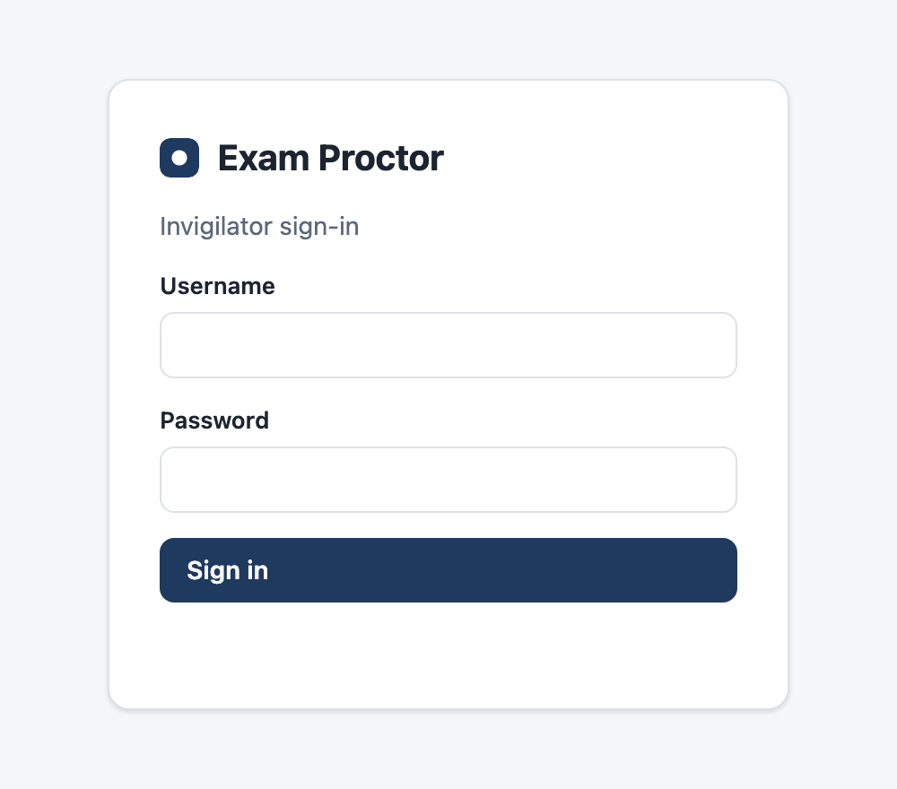
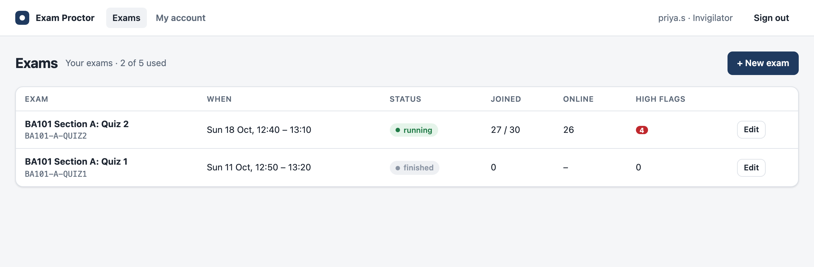
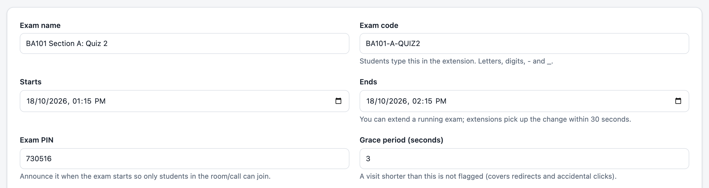
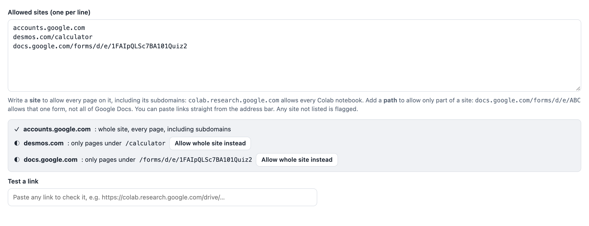
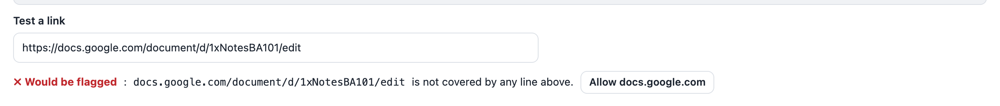
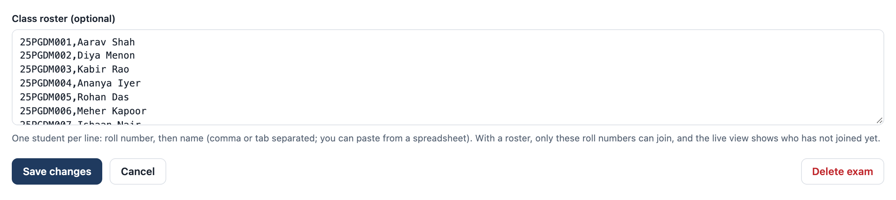
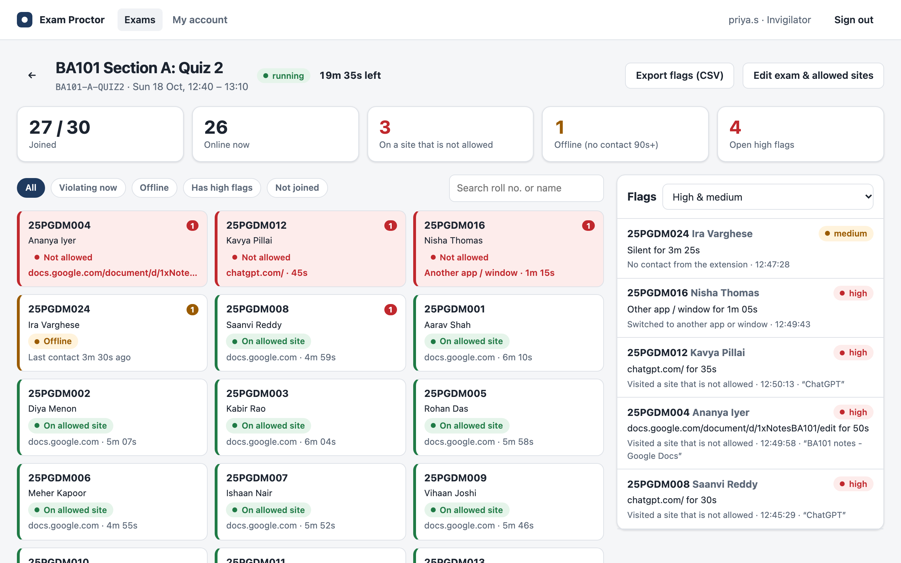
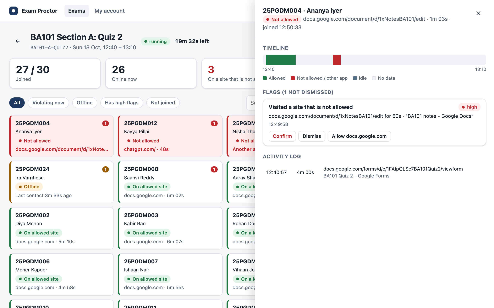

Exam Proctor: Faculty Handbook
How to run a class test with Exam Proctor · Version 1 · October 2026
Exam Proctor lets you decide which websites students may use during an online test, and shows you live, on one screen, any student who goes elsewhere. It uses no camera, microphone or screen recording. This handbook takes you from your first sign-in to reviewing the results.
| Dashboard (for you) | https://exam-proctor-rhbo.onrender.com/dashboard, in any browser |
| Extension (for students) | https://chromewebstore.google.com/detail/jheooojginplgillkdegkhlgblcmoimd, free, Google Chrome only |
| Your login | An invigilator account from Nikhil D Jonathan (nikhildj@xime.org). You see only the tests you create, up to your exam limit |
| Class size | Used with 60 students in one test. For larger classes, tell Nikhil in advance (section 2) |
| Hand to students | Exam Proctor Student Guide (separate PDF) |
| Support | nikhildj@xime.org |
Students install a free Chrome extension once, then join each test with a test code (which you give them in advance), their roll number, and a PIN that you announce at the start. Monitoring runs only between the test's start and end times.
nikhildj@xime.org with your name, preferred username and how many tests you plan to run this term. You will receive an invigilator account with a temporary password and an exam limit.
COURSE-SECTION-TEST, for example BA101-A-QUIZ2. If a code is taken, choose another.
It works best for timed online tests where students should use only a few specific resources: an online quiz (Google Forms, Microsoft Forms, the LMS), a notebook platform, a calculator or documentation. For a test taken entirely on paper, or one that needs many websites, it adds little.
List every site a student genuinely needs, including the sign-in page your quiz platform sends them through. Anything not listed is flagged. Each line can be:
| You write | What it allows |
|---|---|
kaggle.com | The whole site and its subdomains (www.kaggle.com), every page |
docs.google.com/forms/d/e/1FAIpQ… | Only that one Google Form. Google Docs, Sheets and other forms stay flagged |
desmos.com/calculator | Only the Desmos calculator, not the rest of Desmos |
/viewform from the end/viewform (and anything after it). After a student presses Submit, Google moves them to …/formResponse; with /viewform on your line, that page would be flagged for the whole class. Appendix A lists tested entries for common platforms.| Setting | What to choose |
|---|---|
| Test code | COURSE-SECTION-TEST, letters, digits and dashes. Students type it, so keep it short |
| Start and end | The real test window. Students can join any time before the end; monitoring starts at the start time. You can extend the end time during the test |
| PIN | 4 to 12 letters or digits; a new one for every test. Announce it only at the start |
| Grace period | 3 seconds (default). Shorter visits, such as redirects and mis-clicks, are not flagged |
| Flag leaving Chrome | On for most tests. Switch it off if students must use a desktop app (for example Excel), or every one of them will be flagged |
| Class roster | Recommended: paste roll numbers and names from a spreadsheet. Only listed students can join, and you see who hasn't joined |




BA101-A-PRACTICE a few days before the real one, with the same allowed sites. Students install the extension and join it once. Installation problems then surface before they matter, and you can check your allowed-sites list with real students.

| When | What to do |
|---|---|
| 15 minutes before | Sign in to the dashboard (this also wakes the server) and open your test's live view by clicking it in the list |
| 5 minutes before | Announce the PIN. Watch Joined X / Y; use the Not joined filter to help anyone who is missing |
| Start | Release the quiz itself. Monitoring starts automatically at the start time |
| During | Watch for red tiles. You don't need to act on every flag during the test; you will review them afterwards |
| End | Monitoring stops automatically. Wait 15 minutes before reviewing: late uploads from students who lost Wi-Fi still arrive |

| On screen | Meaning |
|---|---|
| Five numbers | Joined out of the roster · online now · on a site that is not allowed right now · offline 90 s or more · open high flags |
| Green tile | On an allowed site |
| Red tile | On a site that is not allowed, or in another app, and for how long |
| Amber tile | Offline: no contact for 90 seconds (Wi-Fi lost, Chrome closed, extension switched off) |
| Grey tile | Not joined yet |
| Red and amber numbers | The student's high and medium flags so far |
| Flags panel | Each new flag as it happens. A pop-up message also appears for each new high flag |
The screen updates itself every 3 seconds. Click any tile or flag to open that student's panel:

| You see | What to do |
|---|---|
| Many students flagged on the same site at once | The test probably needs that site, for example a sign-in page. Check the address; if it's genuinely needed, click Allow <site> on one of the flags. That adds it for everyone, turns tiles green and dismisses its flags. Students' extensions update within 30 seconds. |
| "Allow docs.google.com" offered for a Google Doc | Don't click it in a Forms quiz: it would allow all of Google Docs and Sheets. Treat the visit as a normal flag. |
| An amber tile | Usually Wi-Fi. If it was only Wi-Fi, the flag drops to low on its own when the student reconnects. |
| A student can't join | Check the code, the PIN and that their roll number is on the roster. Edit the roster if needed; they can join any time before the end. |
| Students need more time | Edit exam & allowed sites → change Ends → Save. Extensions pick it up within 30 seconds. |
| "Cannot reach the exam server" for many students | Check the room's Wi-Fi first. If the dashboard is also down, note the time; extensions keep recording and send everything when it returns. |
| Flag | Common innocent causes | What to check |
|---|---|---|
| high Site not allowed | A missing sign-in page; a redirect; a mis-click that lasted over 3 seconds | The site, the page title and how long. Seconds on a sign-in page differ from minutes on an AI tool |
| high Left the browser | A system pop-up, a notification, a password manager | How long, and how often. Ten seconds once is different from repeated long absences |
| high Removed the extension | Rare by accident | Ask the student. Check for gaps around the same time |
| medium No contact | Wi-Fi drop, laptop battery, Chrome crash | How long. A real network drop is usually downgraded to low automatically |
| medium Different or shared browser | Reinstalled extension, changed laptop | Two students on one browser is worth a conversation |
| low Tab open | A tab left open from before the test | Whether they ever switched to it (activity log) |
Records are deleted 90 days after each test, unless a case is under review. Ask Nikhil to keep a test's records longer if a case is open.
| Problem | Fix |
|---|---|
| The dashboard is slow to open | The server sleeps when unused and wakes in about a minute. Always open it 15 minutes before a test. |
| "Wrong username or password" | Usernames are case-sensitive. After 8 wrong tries, sign-in from that network locks for 10 minutes; ask Nikhil to reset your password. |
| "You have reached your limit of N exams" | Export the flags of an old test and delete it, or ask Nikhil to raise your limit. |
| "An exam with this code already exists" | Codes are unique across the institute. Add your section or the term, for example BA101-A-QUIZ2-OCT. |
| Student: "No exam with this code" | Check the spelling; codes are not case-sensitive but must match exactly otherwise. |
| Student: "Not on the list for this exam" | Their roll number is missing or mistyped in your roster. Edit the exam and fix it. |
| Student: "Incorrect exam PIN" | PINs are case-sensitive. Repeat it slowly, or write it on the board. |
| Student: "Cannot reach the exam server" | Their internet, or the server waking up. Wait a minute and retry. |
| Everyone flagged on the same page | A needed site is missing: use Allow <site> (section 6) and remember it for next time. |
| A student's laptop blocks extensions | Managed by another organisation's IT. Offer the alternative arrangement. |
| Platform | Add these lines | Notes |
|---|---|---|
| Google Forms quiz | docs.google.com/forms/d/e/<FORM-ID>accounts.google.com | Copy the form link and delete /viewform. Other forms, Docs and Sheets stay flagged |
| Microsoft Forms | forms.office.comforms.cloud.microsoftlogin.microsoftonline.com | Microsoft uses both addresses for Forms. Links can't be narrowed to one form, so all Microsoft Forms are allowed |
| Learning platform (Moodle or similar) | Your LMS address, for example lms.yourinstitute.edu | Students can also see course materials there; fine for open-book tests |
| Kaggle notebook | kaggle.comaccounts.google.com | Other people's public notebooks are on the same site (section 8) |
| Google Colab | colab.research.google.comaccounts.google.com | Covers every notebook. colab.google is a different site (Google's developer pages) |
| Desmos calculator | desmos.com/calculator | Only the calculator |
| Python documentation | pandas.pydata.org, seaborn.pydata.org, matplotlib.org, docs.python.org | Add only what the test allows |
Avoid broad entries such as google.com (which includes Search and Gemini), microsoft.com (Bing and Copilot) or office.com (Copilot, Word, OneDrive). The dashboard warns you if you type one.
| Flag (as shown) | Level | Raised when |
|---|---|---|
| Visited a site that is not allowed | high | The active tab stays on a site that is not on the list for longer than the grace period |
| Switched to another app or window | high | Another app is in front for longer than the grace period (only if "Flag leaving Chrome" is on) |
| Removed the extension during the exam | high | Chrome reports that the extension was uninstalled |
| Opened a browser page | medium | Chrome settings, extensions page or a local file |
| Screen locked or computer asleep | medium | The screen locks during the test |
| No contact from the extension | medium / low | Silent for 90 seconds; low when it was only a network drop |
| Rejoined from a different browser | medium | The same roll number joins from another browser or after a reinstall |
| Same browser used for another roll number | medium | Two roll numbers join from one browser |
| Has a tab open on a site that is not allowed | low | A background tab is on a site that is not on the list |
Subject: [COURSE] [TEST NAME] on [DATE]: online monitoring with Exam Proctor
Dear students, [TEST NAME] on [DATE] from [START] to [END] will be monitored with Exam Proctor, a Chrome extension that checks you stay on the allowed sites: [LIST THE SITES]. It records only the address and title of the pages you visit, and when you leave Chrome, between the start and end time. It does not record keystrokes, your screen, camera or microphone.
Before [DATE]: install it from https://chromewebstore.google.com/detail/jheooojginplgillkdegkhlgblcmoimd and follow the attached Student Guide. The test code is [CODE]; the PIN will be announced at the start. If you cannot use Chrome or do not wish to be monitored, tell me by [DATE] so we can arrange an alternative.
Reminder: [TEST NAME] tomorrow at [START]. Please bring a charged laptop with Google Chrome and the Exam Proctor extension pinned, and be signed in to [ACCOUNTS, e.g. your Google account] beforehand. Close tabs you don't need. Code: [CODE].